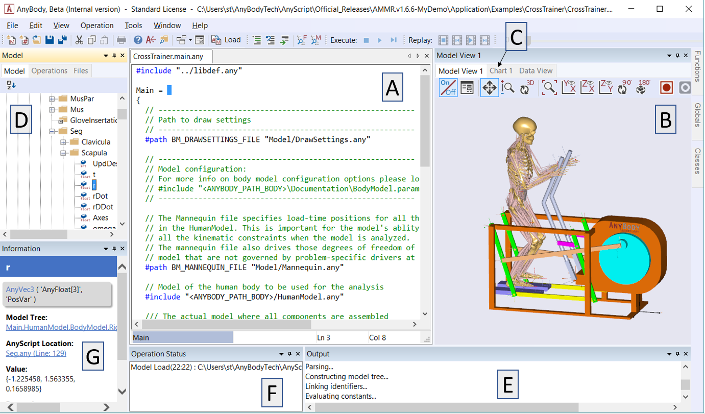

Using the AnyBody Modeling System¶
Please complete the “Getting Started: AnyScript Programming” tutorial before proceeding.
Note
We also strongly recommend watching the introductory video.
Please go to the CrossTrainer example from the AnyBody Managed Model Repository and open the CrossTrainer.main.any file. Load the model into AnyBody by pressing F7 or using the “Load” button in the toolbar.
This GUI contains the following windows:
- AnyScript Editor: Text editor for modifying the model
- Model View: Displays the model in 3D
- Chart View: Displays graphs (click the tab to open it).
- Model Tree View: The model tree represents the organizational structure of model
- Log Window: Errors, warnings, and other status messages are written here
- Progress Window: Displays the progress of the running operation
- Information Window: Displays properties of objects selected in Model Tree
The individual windows will be explained in greater detail in the following lessons:
- Lesson 1: Editor Window Facilities
- Lesson 2: The Model View Window
- Lesson 3: The Chart View
- Lesson 4: Browsing the Model via Model Tree and Object Description
- Lesson 5: The Command Line Application
- Lesson 6: Modifying the Loaded Model
- Lesson 7: Wrapping the Model with AnyBody Project
See also
Next lesson: Lesson 1: The Editor Window.
 Please report it here...
Please report it here...